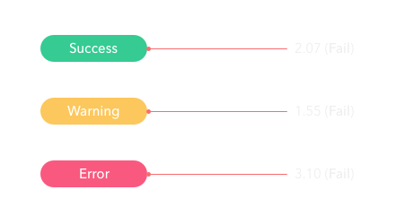
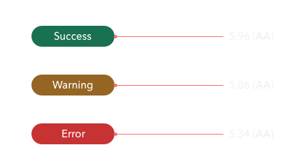

Improving Accessibility with ArcGIS Online Web Apps
Kelly Hutchins
Tao Zhang
slides:
https://arcg.is/08yqfD0
## What is accessibility? Make content usable for everyone regardless of abilities.
## Why is accessibility important? - The ADA and Section 508 - People with different abilities should have equal access - Good accessibility is good user experience
## Accessibility presentations |Title|Time| |---|---| |DIY Accessibility|Wed, March 6. 5:30pm - 6:30pm| |Accessible Web Mapping Apps|Thu, March 7. 9am - 10am| |Improving Accessibility with ArcGIS Online Web Apps|Thu, March 7. 2:30pm - 3:00pm|
## What we will cover today - Test accessibility - Fix accessibility issues - Tools - Best practices
## Demo app Link: <a href="https://arcg.is/1O5u09"><code>https://arcg.is/1O5u09</code></a>
## aXe Link: <a href="https://arcg.is/0Hv8Cn"><code>https://arcg.is/0Hv8Cn</code></a>
## Color contrast - [WCAG 1.4.3](http://www.w3.org/TR/UNDERSTANDING-WCAG20/visual-audio-contrast-contrast.html): Text needs to have contrast ratio of at least 4.5:1. - [Contrast ratio](https://contrast-ratio.com/) - Color picker in Chrome DevTools.
## Symbol colors - [Color cube](https://oomphinc.github.io/colorcube/) - [ColorBrewer 2.0](http://colorbrewer2.org) - Blog article: [How to Make Smart Color Choices in Your Maps](https://www.esri.com/arcgis-blog/products/arcgis-enterprise/mapping/how-to-make-smart-color-choices-in-your-maps/)
## White text on colored background <p style="text-align:center;">  </p> <p style="text-align:center;">  </p>
## Flipping the contrast <p style="text-align:center;">  </p>
## Alternate text - [WCAG 1.1.1](https://www.w3.org/TR/UNDERSTANDING-WCAG20/text-equiv-all.html): Non-text content has text alternative. - If image is decorative, use `alt=""`.
## Write effective alternate text - Think about how users will be doing with the information - Be accurate in presenting the content in images - Be succinct - No need to use the phrase "image of ..." to describe images
## Alternate text demo - [Empty alt](https://developers.arcgis.com/javascript/latest/sample-code/widgets-basemapgallery/live/index.html) - [Descriptive alt](https://story.maps.arcgis.com/apps/MapJournal/index.html?appid=2b1c793f464b4cd2944a0b9700c0dc48)
## Landmark Use both HTML 5 elements and ARIA landmarks. | HTML | ARIA Role | |----------|--------------------| | `<header>` | `role="banner"` | | `<nav>` | `role="navigation"` | | `<main>` | `role="main"` | | `<footer>` | `role="contentinfo"` | <p style="margin-top: 1.5em; font-size: 0.8em;">Reference: <a href="https://www.scottohara.me/blog/2018/03/03/landmarks.html">Accessible Landmarks</a></p>
## Focus and tab order <ul> <li class="fragment">[WCAG 2.4.7](https://www.w3.org/TR/UNDERSTANDING-WCAG20/navigation-mechanisms-focus-visible.html): Interactive elements should have clear focus.</li> <li class="fragment">[WCAG 1.3.2](https://www.w3.org/TR/UNDERSTANDING-WCAG20/content-structure-separation-sequence.html): Navigation (tab) order should be logical and intuitive.</li> <li class="fragment">[WCAG 2.1.1](https://www.w3.org/TR/UNDERSTANDING-WCAG20/keyboard-operation-keyboard-operable.html): Keyboard users should be able to use functionalities using keyboard only.</li> <li class="fragment">[WCAG 2.1.2](http://www.w3.org/TR/UNDERSTANDING-WCAG20/keyboard-operation-trapping.html): Content does not "trap" keyboard focus within subsections.</li> </ul>
## Focus Don't do this: ```css *:focus { outline: 0; } ```
## Focus Keep the browser's default focus styling. Or implement custom focus style.
## Tab order <p style="text-align: left; margin-left: 25px;">Tab order should match intended reading order.</p> - `tabindex="0"`: let DOM structure determine focus order. - `tabindex="-1"`: necessary for programmatically moving focus (e.g., error message, menus, radio buttons, etc.) - `tabindex="3"`: anti-pattern.
## The `<button>` element <p style="text-align: left;">When you use `<button>` element, you get a lot of functionality for free:</p> - Buttons are automatically focusable. - Screen readers will announce the button in focus and offer ways to click the button. - Space and Enter keys are automatically supported when binding a click event listener to a button.
## Semantic HTML - Choose the right HTML element to reflect content structure and meaning. - `<div>` and `<span>` are semantically neutral. - Significantly more work to polyfill the missing semantic information and expected behavior.
## Dialog - When a dialog opens, focus moves to an element inside the dialog. - Focus should be "trapped" inside the dialog until the dialog is dismissed. - Focus should return to the element that opens the dialog. <p style="margin-top: 1.5em; font-size: 0.8em;">Reference: <a href="http://w3c.github.io/aria-practices/#dialog_modal">ARIA Best Practices - Dialog</a></p>
## This is just the beginning - [Lighthouse](https://github.com/GoogleChrome/lighthouse) - Screen reader test - [A11ycasts: VoiceOver](https://youtu.be/5R-6WvAihms) - [A11ycasts: NVDA](https://youtu.be/Jao3s_CwdRU) - Accessibility needs to be part of development process